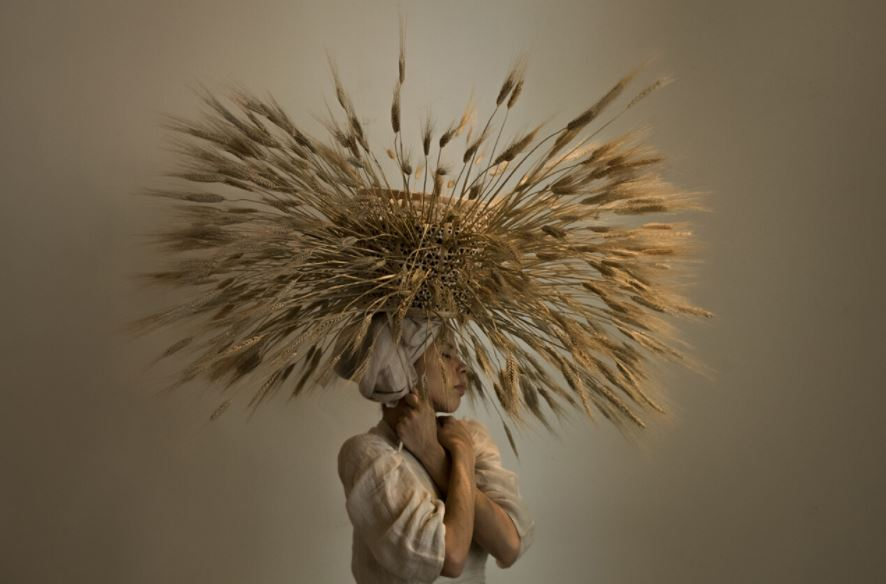

БЕЗГРАНИЧНАЯ ФАНТАЗИЯ HARDIJANTO BUDIMAN
 Фотограф Hardijanto Budiman родился и вырос в Джакарте, Индонезия.
О себе фотограф говорит: «Я обычный человек, который действительно любит все красивое! Мои работы
представляют мои чувства, мое настроение, мои эмоции и, конечно же, мое воображение. Я люблю
исследовать и пробовать необычные, уникальные и разные концепции художественной фотографии».
Фотограф Hardijanto Budiman родился и вырос в Джакарте, Индонезия.
О себе фотограф говорит: «Я обычный человек, который действительно любит все красивое! Мои работы
представляют мои чувства, мое настроение, мои эмоции и, конечно же, мое воображение. Я люблю
исследовать и пробовать необычные, уникальные и разные концепции художественной фотографии».
СЮРРЕАЛИСТИЧНЫЕ РАБОТЫ ОТ RICARDO DA CUNHA
 Фотограф из Австралии Ricardo Da Cunha создает потрясающие
сюрреалистичные работы. «Я нахожусь в путешествии, пытаясь найти свой голос в фотографии и, возможно, еще больше
узнаю себя. Мои изображения стремятся изобразить мир, который я ищу; простой, тихий и лишенный шума, который все
больше доминирует в нашей...
Фотограф из Австралии Ricardo Da Cunha создает потрясающие
сюрреалистичные работы. «Я нахожусь в путешествии, пытаясь найти свой голос в фотографии и, возможно, еще больше
узнаю себя. Мои изображения стремятся изобразить мир, который я ищу; простой, тихий и лишенный шума, который все
больше доминирует в нашей...
МЕЧТАТЕЛЬНЫЕ СНИМКИ ОТ MONO GIRAUD
В своих мечтательных работах фотограф, дизайнер и художник из Буэнос-Айреса Mono Giraud (Моно Жиро) стремится к простоте, создавая скульптуры из одежды, аксессуаров, тканей и прочих вещей, которые сама же и изготавливает: «Меня интересует соединение энергии между объектами и людьми, как в танце». Почти вся одежда, которую...